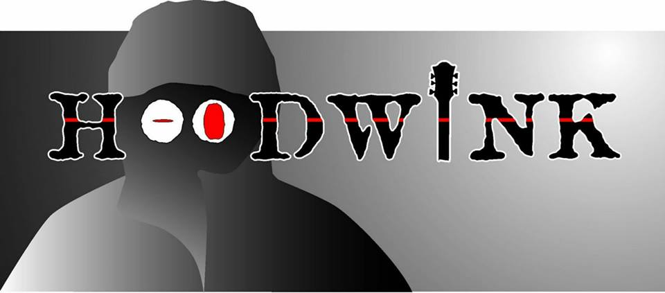
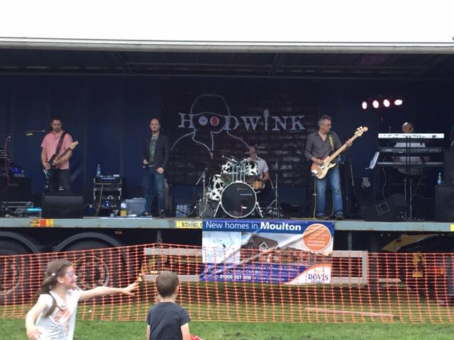

|  | ||
NewsTuesday, November 8, 2016 6:28 PM Hoodwink to rock Slow and EasySaturday November 19th 2016 Manchester Rd, Lostock Gralam, CW9 7PJ Northwich The guys are back on the road and ready to blow the proverbial roof off with some new songs!
See you all there! Photos from Moulton Crow Fair
 Monday, May 9, 2016 6:40 PM New line up announcedWe are really chuffed to announce our newest members to the band. Peter Hughes on bass and Colin Alltree on Drums! There'll be more information about them in the near future, but n the meantime....welcome aboard! and...... Hoodwink to Play Top Monkey, Northop HallThe band are pleased to announce that they'll be returning to the Top Monkey, aka The Boars Head, Village Road, Northop Hall, Flintshire, CH7 6HS on Saturday 28th May. Always a cracking venue and a great crowd, they'll be on from around 9pm. Monday April 18, 2016 7:40 PM Pictures from Moulton Verdin 16th April
Line up changeHoodwink would like to give a big thanks to Blondy who has been bashing the skins for us over the last 10 months. Drummer extraordinaire, sometimes wild, sometimes strange, sometimes half naked but always very much Blondy! We wish him lots of luck in his new band The Broadcasters - they are going be great and we highly recommend you check them out when they hit the live scene shortly. Thanks pal - big hugs 🎸🎤 Wednesday, April 6, 2016 2:47 PM Hoodwink to play Moulton Verdin WMC Saturday 15th April 2016.Click on the image below to view the Facebook event and get more information......don't forget to "Like" us!
Sunday, March 27, 2016 2:13 PM Great night at The Watermead in Northwich playing for a private Golden Wedding anniversary! Getting some photos on the web ASAP! I wonder if Blondy ever smiles? Friday, March 18, 2016 9:16 AM Hoodwink have been booked to play a massive Charity gig in Stockton Heath on Saturday 28th May 2016....more info to come, however last years event can be viewed here. We will be on from 8-10 PM and it's hoped that the venue will in the centre of Stockton Heath, however should that not be possible, then it will be held at Warrington Sports Club. Watch this space!! STOP PRESS!!!! This event has been put back to September, however Hoodwink WILL be appearing at the same time. Date to be announced.
|


Site created by JMJ Media © 2016